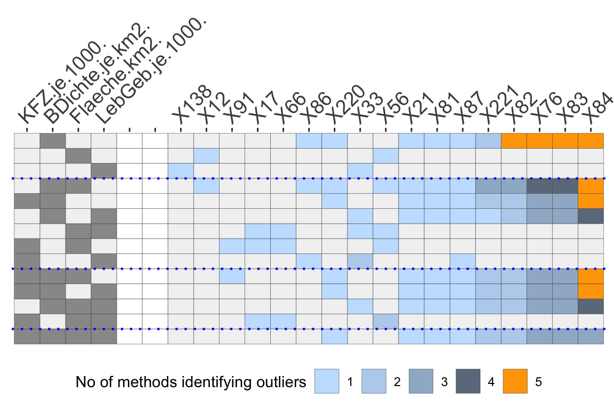
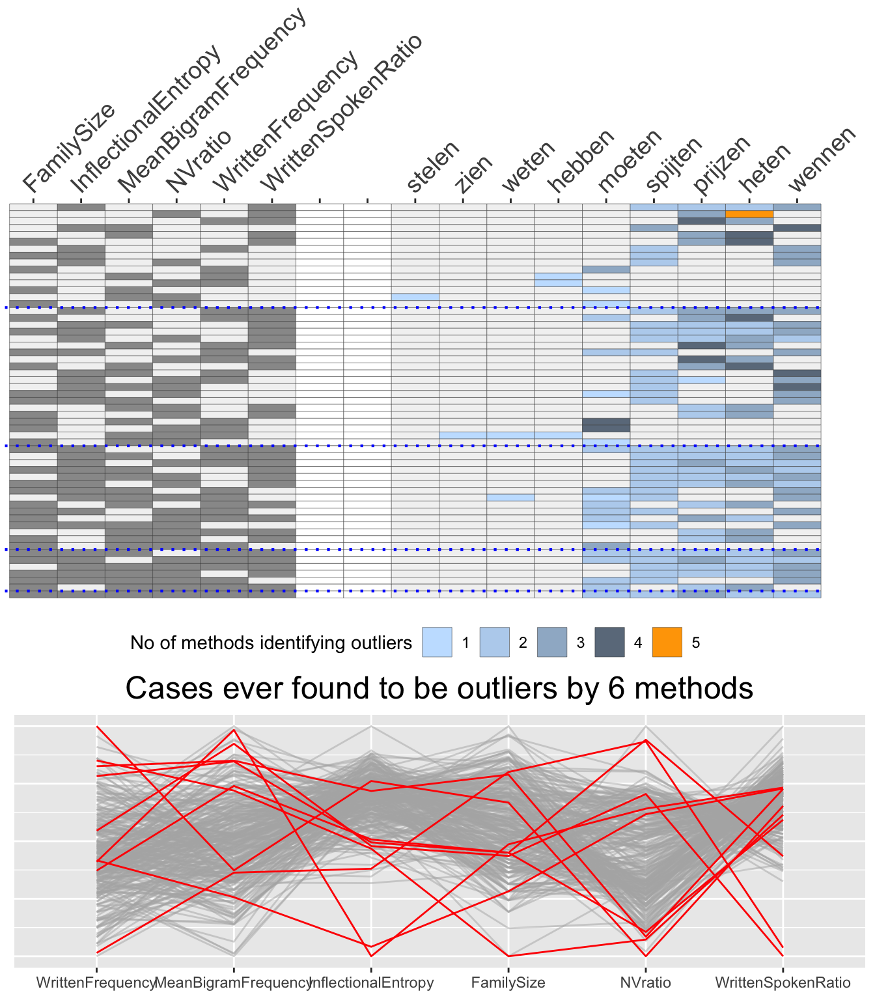

MultTolLevels.RmdThe outlier methods used in the OutliersO3 package identify outliers in different ways. The common key parameter is usually called alpha (alpha.cutoff for adjOutlyingness, tolProb for DDC), although for some methods (FastPCS, DDC, covMcd) it is input as (1-alpha). OutliersO3 uses tol arguments, short for tolerance level, to put all these on an equivalent footing. The alphas (or (1-alpha)’s) are not directly comparable and so they should be set individually when drawing O3 plots to compare results. It is up to users to decide which value should be used for each method.
Figure 1 shows an example using four variables of German demographic data. Applying the default tolerance level values from the help pages of the individual methods, far too many outliers were generated with some of the methods. A little experimentation with the tolerance levels was carried out to reduce these numbers to more manageable ones. (This new set of tolerance levels is the current default in O3prep.)
library(OutliersO3)
## Registered S3 method overwritten by 'GGally':
## method from
## +.gg ggplot2library(ggplot2) data(Election2005) data <- Election2005[, c(6, 10, 17, 28)] O3d <- O3prep(data, method=c("HDo", "PCS", "BAC", "adjOut", "DDC", "MCD"), tolHDo=0.05, tolPCS=0.5, tolBAC=0.95, toladj=0.25, tolDDC=0.01, tolMCD=0.5) O3d1 <- O3plotM(O3d) O3d1$nOut
## HDo PCS BAC adjOut DDC MCD
## 10 293 129 39 4 246O3p <- O3prep(data, method=c("HDo", "PCS", "BAC", "adjOut", "DDC", "MCD")) O3p1 <- O3plotM(O3p) O3p1$nOut
## HDo PCS BAC adjOut DDC MCD
## 10 10 5 1 4 11O3p1$gO3
 Fig 1: An O3 plot displaying outliers found by any of the 6 methods using individually specified tol values. No outlier was identified by all six methods for any combination of variables.
The constituency labelled X84 is the Berlin-Friedrichshain -etc one mentioned in the first vignette. There are 4 variable combinations where it is identified as an outlier by five of the methods. Inspecting the table of outlier cases by variable combinations and methods, outsTable, reveals that the DDC method is the odd man out three times. In fact, it does not really identify any outliers at all, as the 4 ascribed to it all come from the boxplot outlier identification rule that is used for methods which cannot identify outliers for single variables.
It should not be surprising that the methods find different outliers, because they are all different and have different goals, although we might have expected that they all agree on the most extreme outliers. Perhaps the main surprise is that the differences are so great—at least for this dataset.
The etymology dataset from languageR includes 285 Dutch verbs with 13 attributes. Excluding the four factors and three other attributes, potential outliers were identified using the six methods and the same individual tolerance levels as for the example shown in Figure 1.
data(etymology, package="languageR") data <- etymology[, c(2, 4, 5, 10, 13, 14)] O3q <- O3prep(data, method=c("HDo", "PCS", "BAC", "adjOut", "DDC", "MCD"), tolHDo=0.01, tolPCS=0.005, tolBAC=0.005, toladj=0.1, tolDDC=0.01, tolMCD=0.000001) O3q1 <- O3plotM(O3q) O3q1$nOut
## HDo PCS BAC adjOut DDC MCD
## 52 12 5 5 16 5HDoutliers identified far too many outliers so the individual outlier output was inspected to find out for which combinations of variables this occurred. (The variable combination labels are a binary coding in the original order of the variables in the dataset.)
outHD <- O3q1$outsTable %>% filter(Method=="HDo") %>% group_by(Combination) %>% summarise(num=n()) %>% filter(num>5) knitr::kable(outHD, row.names=FALSE)
| Combination | num |
|---|---|
| c010000 | 42 |
| c000001 | 6 |
The problem clearly lies in the second attribute, MeanBigramFrequency, and not in the tolerance level set. It was decided to ignore the one dimensional combinations by setting k1=2, and leave the tolerance level as it was. Tightening the tolerance levels for the other two methods finding more than a few outliers (FastPCS and DDC) and adding case names for labels led to Figure 2.
O3r <- O3prep(data, method=c("HDo", "PCS", "BAC", "adjOut", "DDC", "MCD"), k1=2, tolHDo=0.01, tolPCS=0.0025, tolBAC=0.005, toladj=0.1, tolDDC=0.005, tolMCD=0.000001) O3r1 <- O3plotM(O3r, caseNames=etymology$Verb) O3r1$nOut
## HDo PCS BAC adjOut DDC MCD
## 4 6 5 3 4 5library(gridExtra)
##
## Attaching package: 'gridExtra'## The following object is masked from 'package:dplyr':
##
## combinegrid.arrange(O3r1$gO3 + theme(plot.margin = unit(c(0, 1, 0, 0), "cm")), O3r1$gpcp, ncol=1, heights=c(2,1))

Fig 2: An O3 plot of the etymology dataset for combinations to 2 to 6 variables. There is little agreement amongst the methods and no agreement anywhere for all six methods together. The parallel coordinate plot does suggest two pairs of potential outliers on single variables, but judging by the O3 plot they would not be identified as outliers in six dimensions.
A full analysis would include a discussion of the verbs with an expert in Dutch linguistics. Statistical methods can be used to identify cases of possible interest and O3 plots and parallel coordinate plots can help indicate why cases are outliers, but subject matter knowledge is essential.